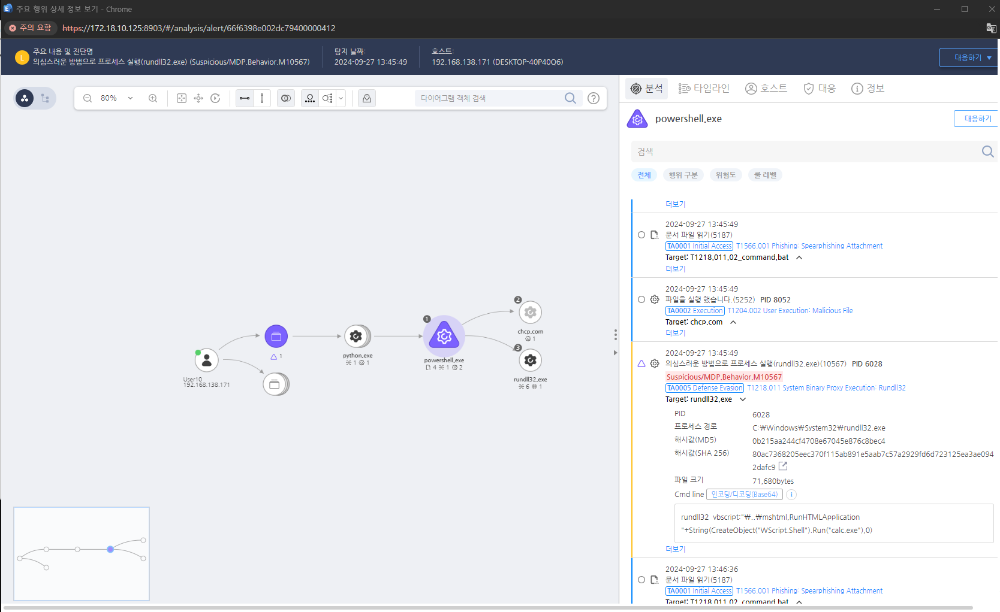

T1218.011.02 시스템 바이너리 프록시 실행, Rundll32
D3FEND
MITRE ATT&CK 액션을 기준으로 대응 방안을 작성
Detection
rundll32.exe의 "vbscript", "javascript", "mshtml" 커맨드를 탐지한다.
Detection(EDR)

Response
regsvr32.exe의 실행 및 매개변수를 모니터링하여 비정상적인 사용을 탐지합니다.
Mitigations
엑셀 매크로 실행 제한 (M1042 - Disable or Remove Feature or Program)
- 엑셀에서 매크로 실행 차단
- 그룹 정책을 통해 매크로 실행을 "알림" 또는 "모두 차단"으로 설정
- 엑셀 신뢰할 수 있는 위치에 파일을 두지 않도록 제한
- 보안 경고 활성화: 매크로가 포함된 파일을 열 때 보안 경고 창이 표시되도록 설정
파일 다운로드 및 실행 제한 (M1031 - Network Segmentation & M1037 - Network Intrusion Prevention)
- 이메일 첨부파일에서 엑셀 파일을 열지 않도록 사용자 교육
- 첨부파일 실행을 차단하거나 제한하는 이메일 보안 솔루션 적용
- 악성 링크를 통한 다운로드 차단: 이메일 및 웹 필터링을 통해 악성 엑셀 파일 다운로드 차단
엑셀 매크로 및 스크립트 감시 및 탐지 (M1047 - System Logging & Monitoring)
- 엑셀 관련 이벤트 모니터링 (엑셀에서 매크로가 실행되었을 때 이벤트 로그 기록)
- EDR/XDR 솔루션을 활용한 악성 엑셀 파일 탐지
- 자동 실행된 매크로 탐지 및 차단
PowerShell 및 VBA 스크립트 제한 (M1026 - Privileged Account Management)
- PowerShell 및 VBA 스크립트 제한: 그룹 정책을 통해 PowerShell 또는 VBA 스크립트 실행 제한
- 사용자 권한 최소화: 일반 사용자에게 엑셀 매크로 실행 및 PowerShell 실행 권한을 제한
사용자 교육 및 보안 인식 강화 (M1019 - Awareness and Training)
- 첨부된 엑셀 파일을 열지 않도록 사용자 교육
- 매크로와 관련된 보안 위험을 사용자에게 인식시키는 교육
- 신뢰할 수 없는 소스의 파일 열지 않기
Affected Techniques
Action 실행시 함꼐 영향을 받는 다른 Techniqes
| D3FEND |
| D3-PM Platform Monitoring |
| D3-PLA Process Lineage Analysis |